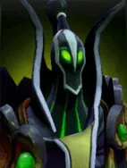
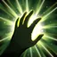

Spell Steal
BATTLECRY ABILITY: Activates on battle
Rubick studies the trace magical essence of the enemy piece, learning the secrets of the spell the piece has.
At the start of a combat, Rubick randomly steals the active ability and attack range of an enemy piece who has mana to replace Spell Steal.
Rubick on the chessboard resets his ability to Spell Steal when losing a home battle.
| ★ | ★★ | ★★★ | |
|---|---|---|---|
| Level of Stolen Spell | 1 | 2 | 3 |
- Rubick can steal both active and passive spells, excluding class perks and species traits.
- Rubick resets his ability to Spell Steal when combined into a higher level.
I am no thief. I merely borrow.
Stats
| ★ | ★★ | ★★★ | |
|---|---|---|---|
| Health | 500 | 1000 | 2000 |
| Mana | 100 | 100 | 100 |
| Armor | 2 | 2 | 2 |
| Magic resistance | 20% | 20% | 20% |
| Attack damage | 50–60 | 100–120 | 200–240 |
| Attack interval (s) | 1.4 | 1.4 | 1.4 |
| Attack range | 205 | 205 | 205 |
| Move speed | 500 | 500 | 500 |
 God · Overweening Superiority
God · Overweening Superiority
- (2) All allies: skill cooldowns -40%.
- (4) All allies get another -40% skill cooldown. It multiplies with the (2) bonus, for -64% in total.
- (6) All allies: right after casting their skill, the remaining cooldown of that skill and of all their items is cut by 60%.
 Wizard · Something from Nothing
Wizard · Something from Nothing
Enemies attack Wizards last: they count as low-priority targets.
- (2) Any other race/class level that needs 4 or more pieces is unlocked with one fewer, as long as you already have at least 3 (Demon excluded).
- (3) If exactly one non-Wizard race or class is active, all of its levels are unlocked.